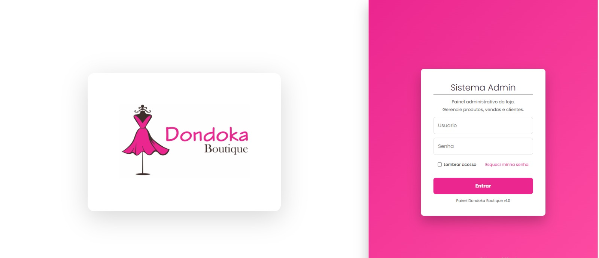

Matheus
Desenvolvedor Full Stack focado em sistemas web, dashboards e monitoramento de rede. Experiência com React, Node.js, APIs e automação para ambientes NOC.
Desenvolvedor Full Stack focado em sistemas web, dashboards e monitoramento de rede. Experiência com React, Node.js, APIs e automação para ambientes NOC.
Sou desenvolvedor focado em aplicações web e automação de sistemas. Trabalho com desenvolvimento Full Stack utilizando React no frontend e Node.js no backend. Tenho experiência com monitoramento de rede, dashboards operacionais e infraestrutura NOC.
Desenvolvimento de lógica e aplicações web modernas.
Superset do JavaScript utilizado para aplicações escaláveis.
Construção de interfaces modernas e componentes reutilizáveis.
APIs REST e backend para aplicações web.
Estruturação semântica de páginas web.
Estilização moderna e layouts responsivos.
Programação de sistemas, lógica de baixo nível e algoritmos.
Consultas, joins e manipulação de banco de dados.
Banco de dados relacional utilizado em aplicações backend.
Banco de dados relacional baseado em MySQL, utilizado em aplicações web escaláveis e APIs.
Automação, scripts e desenvolvimento de APIs.
Controle de versão e gerenciamento de código com GitHub.

Dashboard de monitoramento de rede desenvolvido para ambientes NOC, permitindo visualização em tempo real do status de equipamentos, alertas e indicadores operacionais.
GitHub
Plataforma interna desenvolvida para centralizar sistemas, ferramentas e informações corporativas da empresa Acessanet, facilitando o acesso e a produtividade da equipe.
GitHub
Área do cliente desenvolvida para a empresa Projecta, oferecendo acesso seguro a informações, serviços e recursos através de uma interface web moderna e intuitiva.
GitHub
Portal de autenticação Wi-Fi com página de login personalizada, desenvolvido para melhorar a experiência de acesso e identidade visual da rede.
Github Ver Projeto
Site institucional desenvolvido para a clínica Sibcare, com foco na apresentação da empresa, serviços estéticos e fortalecimento da presença digital da marca.
Github Ver Projeto

Site institucional desenvolvido para a empresa Tico Carretos, com foco em divulgação de serviços, contato rápido e presença digital.
Github Ver Projeto
Site desenvolvido para a loja de roupas Dondoka Boutique Tobias, localizada em Franco da Rocha, com foco em apresentação moderna, catálogo de produtos e divulgação da marca.
Github Ver ProjetoExperiência em ambientes NOC realizando monitoramento de equipamentos OLT, switches e redes GPON. Desenvolvimento de dashboards e automações para visualização de eventos e status da rede.
Email: matmarques221@gmail.com
Telefone: (11) 94537-3445
GitHub: github.com/matheusdevsilva
Enviar Email